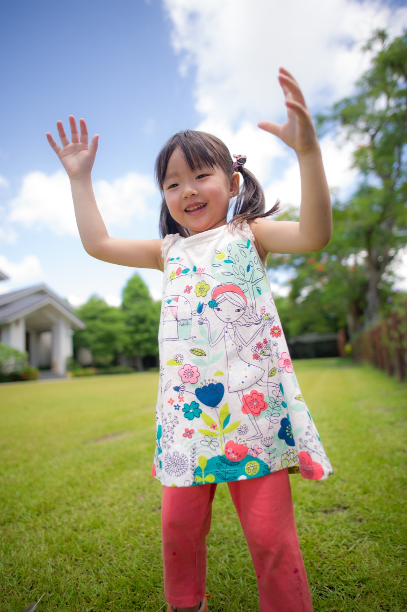

適合對象
- 家庭照與親子寫真
- 閨蜜照、情侶寫真與個人形象照
- 想同時拍棚拍與草地外景的客人
利用現場實景自然拍攝
拍攝會依光線與當天天候，使用圓頂帳篷、床景、桌椅、戶外草地及森林環境。方案不另外搭設白色背景，讓流程更簡單，也更接近入住當下的生活感。
空間使用示意
以下示意圖將依方案陸續補上實際照片，協助了解不同活動如何使用雲朵帳篷、熱氣球帳篷與戶外草地。

熱氣球帳篷｜化妝、換裝、家人休息與現場選片空間。

戶外草地｜親子奔跑、家庭互動與自然光生活感照片。
常見問題
拍攝方案與費用
合作攝影方案｜原價 NT$6,800
住宿客配合優惠價：NT$4,800
這項服務為合作攝影師加購方案，須於訂房或活動預約時一併確認攝影師檔期。
方案內容：
- 拍攝時間：1 小時內
- 入住客於入住後第一個小時拍攝
- 使用帳篷、床景、桌椅、草地與森林現場實景
- 不搭白色背景，不包含妝髮與客製主題佈景
- 適用於家庭照、家庭親子寫真、閨蜜寫真、個人形象照，也可安排人寵合照
- 拍攝完成後，提供調色後照片交付
拍攝會自然融入住住或包場行程，不另外占用大段活動時間；完成後即可繼續原本的休息、聚餐與草地活動。
提醒：實際拍攝內容會依當天拍攝節奏、人物或毛孩狀態、場景安排與自然互動情況做適度調整，讓整體照片更自然，也更符合當次拍攝需求。
精修與加購說明
本方案不包含精修照片。
拍攝完成後，會提供調色後照片交付，讓客人可以先挑選自己最喜歡的照片。
如需精修，可另外加購，精修價格為每張 NT$800 起。
若照片修圖需求較高，例如：
- 多人合照細修
- 背景雜物處理
- 修身或較高強度修飾
- 較細緻的膚況調整
則會依實際修圖需求另外報價。
這樣的安排也讓拍攝方案價格更單純，客人可以先以較輕鬆的預算完成拍攝，再依照自己喜歡的照片加購精修。
住宿期間的簡單合作加購
住宿客可在入住後第一個小時完成拍攝，接下來的時間就回到原本的住宿節奏，自在休息、聚餐、玩耍與使用預訂房型所包含的空間。
此方案只是可選擇的合作服務，不會由攝影師介入後續住宿活動；是否能安排仍以攝影師當日檔期為準。
妝髮與服裝加購
妝髮可另外加購，目前採預約安排。因配合造型師檔期與風格不同，費用會依實際需求確認。
參考價格如下：
- 單人妝髮約 NT$3,500-5,500
- 2 人妝髮約 NT$7,000-11,000
常見問題 FAQ
Q1：家庭照、閨蜜寫真、個人形象照，價格都一樣嗎？
A：合作攝影方案原價 NT$6,800；預訂住宿的客人可享配合優惠價 NT$4,800。
Q2：拍攝時間多長？
A：拍攝時間 1 小時內；住宿客安排於入住後第一個小時拍攝。
Q3：拍攝場景有哪些？
A：使用帳篷、床景、桌椅、草地與森林等現場實景，不另外搭設白色背景。
Q4：有包含精修嗎？
A：本方案不包含精修照片。拍攝完成後，會提供調色後照片交付。如需精修，可另外加購，精修價格為每張 NT$800 起。
Q5：多人合照精修怎麼算？
A：精修是依照片張數計算，不是依照片裡有幾個人來計算。但如果照片修圖需求較高，例如多人同時細修、背景處理、修身、較高強度膚質修飾等，會依實際修圖需求另外報價。
Q6：可以拍親子家庭照，也可以拍閨蜜照或個人形象照嗎？
A：可以。這個頁面整合的是人物寫真服務，包含家庭照、家庭親子寫真、閨蜜寫真、個人形象照等不同拍攝需求。
Q7：有提供妝髮嗎？
A：妝髮可另外加購，目前採預約安排。參考價格為單人妝髮約 NT$3,500-5,500，2 人妝髮約 NT$7,000-11,000，實際仍依造型師檔期與需求確認。
Q8：可以帶寵物一起拍嗎？
A：可以。如果想拍人寵合照或帶毛孩一起入鏡，也可以安排。若想看更完整的毛孩拍攝內容與寵物攝影說明，可以前往寵物攝影專頁。
攝影棚現場場地照片
以下為 Joyforest 現場環境與攝影棚空間照片，包含白天與夜景、草地區、室內棚拍區與道具場景，方便你先了解實際拍攝場地氛圍。
親子寫真家庭照作品
以下為家庭照、家庭親子寫真與親子互動攝影作品。點擊照片可放大檢視，並可左右切換瀏覽完整作品集。（以上作品主要呈現攝影師的拍攝風格與引導專業，不一定皆於本場地拍攝。）
閨蜜照・閨蜜寫真作品
以下為閨蜜照、閨蜜寫真與姐妹合照作品示意。點擊照片可放大檢視，並用左右按鈕切換下一張，方便瀏覽完整系列。（以上作品主要呈現攝影師的拍攝風格與引導專業，不一定皆於本場地拍攝。）
個人形象照・個人寫真作品
以下為攝影師過往的自然光與生活感個人寫真作品。現行合作方案以 Joyforest 現場實景拍攝為主，不搭設白色背景。
相關關鍵字
#家庭照 #親子寫真 #家庭攝影 #人像寫真 #桃園家庭寫真 #自然風寫真 #生活感寫真 #森林系寫真 #閨蜜寫真 #個人形象照